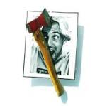

Aliquam tristique diam quis ipsum elementum, ac rhoncus massa luctus. Proin placerat sem sed volutpat efficitur. Aenean quis imperdiet mi, vel tristique quam. Curabitur eu sagittis mi. Etiam eu ipsum rhoncus, tincidunt libero blandit, sollicitudin augue. Etiam nunc erat, rutrum in aliquet non, imperdiet nec erat. Duis finibus accumsan libero, ut cursus odio dapibus luctus. Donec dapibus eros tellus, at fringilla metus iaculis sed.
Jazz w wolnych chwilach – czwarty album polskiego rapera i producenta muzycznego O.S.T.R.-a. Ukazał się 5 grudnia 2003 roku. Jest to album dwupłytowy. Na pierwszym CD znalazło się 20, a na drugim 22 utwory, przy czym selekcji dokonano z ponad stu utworów. Płyta sprzedała się w ponad 10 000 egzemplarzach. 29 czerwca 2007 miała miejsce reedycja płyty. Nagrania dotarły do 21. miejsca listy OLiS[1].
Jazzurekcja – piąty album polskiego rapera i producenta muzycznego O.S.T.R.-a. Ukazał się 18 listopada 2004 roku nakładem wytwórni Asfalt Records. Na płycie znalazły się 22 utwory. W całości utrzymana w konwencji ego-tripping, jest drugą płytą tego autora zainspirowaną muzyką jazz. Nagrania dotarły do 5. miejsca listy OLiS[3]. W 2004 roku album uzyskał nominację do nagrody polskiego przemysłu fonograficznego Fryderyka w kategorii "najlepszy album hip-hop/R&B"[4]. 27 listopada 2009 roku ukazał się dwupłytowy album pt. Jazzurekcja: Addendum[5]. Na wydawnictwie znalazły się m.in. tzw. instrumentale oraz wersje demo piosenek z Jazzurekcji. 